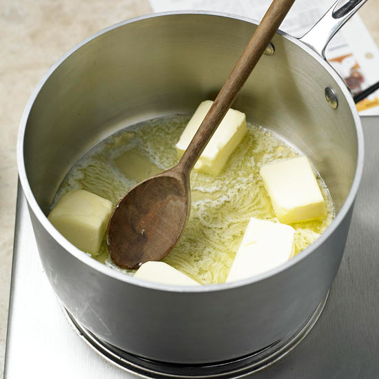
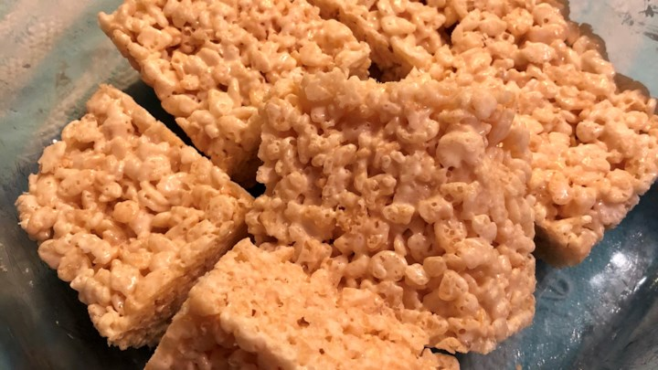
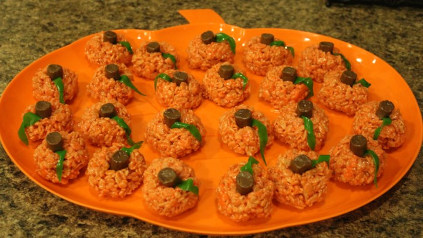

Recipe and images from: AllRecipes
Ingredients
- 1/4 cup of butter
- 5 cups Rice Krispies
- 4 cups marshmallows
- orange and green food colouring
Directions

- Melt butter in large sauce pan over low heat.
- Add marshmallows and stir until melted and well-blended.
- Cook 2 minutes longer, stirring constantly. Remove from heat.
- Add cereal. Stir until well coated.

- Using buttered spatula or waxed paper, press mixture evenly and firmly in buttered 13 x 9 inch pan. Cut into 2 x 2 inch squares when cool.
- Shape into balls. Take one and shape into stubby sticks (like a pumpkins)
- Colour the balls with orange and the stems orange

- Stick balls together with the stem